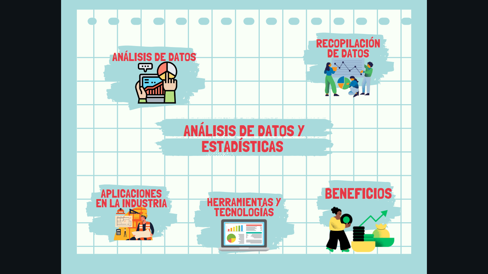

El análisis de datos y las estadísticas desempeñan un papel crucial en la industria moderna al proporcionar información valiosa para la toma de decisiones informadas y la mejora continua. Se estructuran de la siguiente manera:
El análisis de datos en las estadísticas en la industria es vital para mejorar la eficiencia, la calidad y la competitividad. Las organizaciones que aprovechan el poder de los datos pueden tomar decisiones más inteligentes, optimizar sus operaciones y estar mejor preparadas para enfrentar los desafíos y aprovechar las oportunidades en un mercado en constante cambio.
